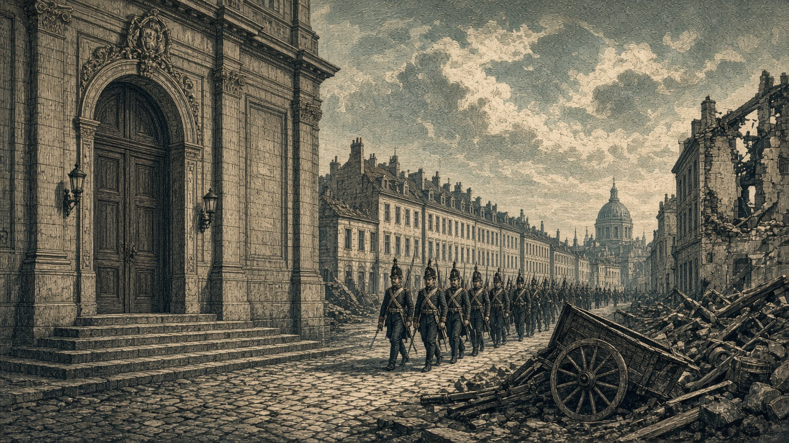

アルガリスト陥落
首都が泰平領に
町（47,40）を占領 大都市ヴァルセナは帝国領 宰相星書廉が声明
【総合部】アルガリスト帝国の首都アルガリスト（47,40）は第143期、泰平天国の占領下に落ちた。帝国の首都は失われ、大都市ヴァルセナ（48,40）が残る最大の拠点になった。帝国は国としては存続し、領地は26区画。宰相の星書廉は声明を出した。詳報2面。

今期の戦果は泰平5,600人、帝国1,100人。これまでの戦果は泰平81,000人、帝国23,200人。帝国は自国の兵站（47,41）へ対人ミサイルを撃ち、多数が負傷した。予定地が泰平領になった徴兵は中止された。
青海とオリョルッル、停戦合意
【国際部】青海共和国とオリョルッル王国は停戦に合意し、両国の戦争は終わった。これから12期は再戦できず、そのあいだ民間の弾薬・燃料・鋼鉄の売買は止まる。国どうしの取引は続く。王国は黒潮自治国との戦争を続け、第145期には黄砂同盟との開戦を控える。詳報4面。
黒潮の首都に砲弾 200人が犠牲
【軍事部】カペレナ王国の戦艦が黒潮自治国の首都アルヴェナ（20,17）に命中し、人口が2,000人から1,800人になり、200人が犠牲になった。首都区画の部隊は全滅した。王国の海兵が同じ区画に入っている。今期の戦果はカペレナ9,200人、黒潮600人。詳報3面。
チェスからオリョルッルへ49,600人
【社会部】チェス＝シロバキア共和国からオリョルッル王国へ49,600人が着いた。王国の人口は1,084,000人。泰平から狐っ娘の尻尾教団へは31,400人。火災はチェス・泰平・なのですの3か国で48,500人。詳報4面。